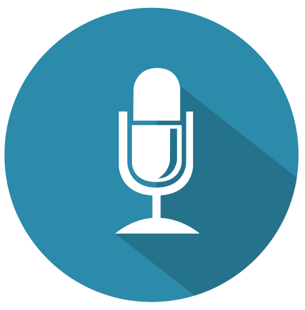

<!--<ion-header>
  <ion-navbar color="primary">
    <ion-title>
      Speech Recognition App Test
    </ion-title>
  </ion-navbar>
</ion-header>-->

<ion-content padding>
  <div *ngIf="isValid == false">
    <button ion-button (click)="isSpeechSupported()"> Soporta voz? </button>
    <button ion-button (click)="getPermission()">  Dar Permisos </button>
    <button ion-button (click)="hasPermission()"> Tiene Permisos? </button>
    <button ion-button (click)="getSuppotedLanguages()"> Que lenguajes soporta? </button>
  </div>
  
  <h4 text-center>{{text}}</h4>
  
  <button ion-button (click)="listenForSpeech()" class="btn-speak">
    
  </button>

</ion-content>

